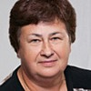

Дошкольное отделение школы № 1623
В 2015 году 45% первоклассников Школы № 1623 пришли из дошкольного отделения.
- Кировоградская улица, 9А
- Кировоградская улица, 5А
Воспитатели
Воспитатели, которых чаще всего благодарят родители (отзывы и профили сотрудников взяты с официального сайта школы):
 Воспитатель
Самылкина Екатерина Ивановна
Воспитатель
Самылкина Екатерина Ивановна
19 благодарностей |

Воспитатель
Солодова Елена Федоровна
13 благодарностей |
Воспитатель
Дальцаева Лариса Валентиновна
8 благодарностей |
Воспитатель
Орлова Маргарита Михайловна
7 благодарностей |
|
Воспитатель
Овчинников Наталья Вячеславовна
6 благодарностей |
Боронина Алла Анатольевна
4 благодарности |
Воспитатель
Сластина Галина Владимировна
3 благодарности |
Логопед
Кострова Юлия Викторовна
2 благодарности |
 Воспитатель
Чилаева Фатима Султановна
Воспитатель
Чилаева Фатима Султановна
2 благодарности |
Воспитатель
Бабина Анастасия Александровна
2 благодарности |
Воспитатель
Медведева Наталья Викторовна
2 благодарности |
Воспитатель
Дорофеева Галина Николаевна
1 благодарность |
|
Воспитатель
Мешкова Наталья Юрьевна
1 благодарность |
Воспитатель
Пушакова Марина Ивановна
1 благодарность |
Отзывы
Данные собраны c официального сайта школы и через форму для отзывов.
Добрый день! Хотелось бы поблагодарить весь коллектив нашего замечательного детского садика по адресу:Кировоградская 9а. Большой труд в воспитание детей вкладывают воспитатели, педагоги. Мой сын, Горкин Георгий, с удовольствием идет в садик, Наталья Вячеславовна очень много занимается с детьми, с заботой и добром относится к каждому ребенку. Наталья Вячеславовна пользуется популярностью и авторитетом у детей.Я вижу результат каждый день. Спасибо также медицинской сестре за внимательное отношение. Хотелось бы отметить, что детей очень вкусно кормят, ни разу не было проблем с пищей. Отдельное спасибо за прекрасные праздники, очень развивает детей. Детям прививают правильное отношение к режиму, чистоте, отношениям в коллективе. Большое спасибо
Добрый день. От лица всех родителей посетивших "День открытых дверей" 20.04.2016 в нашей группе (№2 сад 1711) хочу поблагодарить наших воспитателей Дальцаеву Ларису Валентиновну и Самылкину Екатерину Ивановну за увлекательные уроки. Дети увлеченно выполняли все предложенные Ларисой Валентиновной задания, с удовольствием выходили к доске и с легкостью отвечали на различные вопросы. Сразу видно, что с детьми в течение года превосходно занимались. Весь урок был преподнесен в игровой форме, словно дети попали в сказку. Было видно, что дети в восторге! Вторым уроком у наших деток была физкультура, и тут нам повезло больше всех, ведь второй наш воспитатель - Екатерина Ивановна - преподаватель физкультуры! Урок прошел на ура! Дети дружно прыгали, бегали эстафету и играли с мячом. Самым запоминающимся моментом лично для меня была зарядка под веселую песенку, которую дети выполняли с восторгом! В заключении хочу отметить самое важное для нас родителей - это подход воспитателей к детям! И Лариса Валентиновна и Екатерина Ивановна относятся ко всем детям одинаково: по-матерински строго и любяще!
Вложенный файл
Вложенный файл
20.04.2016 г. я присутствовала на открытом занятии по математике в группе №4 у моего внука Куркина Андрея. Занятие проводила наша воспитатель Солодова Елена Федоровна. Занятие было педагогически правильно построено. Все дети (хочу уточнить, что посещаемость в группе всегда очень высокая - более 20 детей ежедневно) принимали активное участие, увлеченно, с интересом выполняли задания, внимательно слушали Елену Федоровну. В течение занятия также закреплялся уже изученный материал, проводилась физкультминутка. Елена Федоровна уделяла внимание каждому ребенку. Я сама много лет отработала воспитателем в детском саду и хочу отметить, что занятие прошло отлично. Большое спасибо Елене Федоровне за добросовестную работу!
Бабушка Куркина Андрея - Ульянова Н.И. группа №4 д/с 1623
Бабушка Куркина Андрея - Ульянова Н.И. группа №4 д/с 1623
Добрый день. Хочу выразить огромную благодарность воспитателям группы № 9, Бабиной Анастасии Александровне, Чилаевой Фатиме Султановне, а так же няне Ларьковой Елене Сергеевне. На «Дне открытых дверей» они доказали свой профессионализм и любовь к нашим детям.
Их команда, в очередной раз, смогла продемонстрировать таланты наших детей. Благодаря усердию, с которым они подходят к каждому выступлению, мы получили массу положительных эмоций.
Каждое утро они встречают детей с улыбкой и хорошим настроением, а я передаю ребенка со спокойным сердцем в их добрые руки. Хочется отметить, что воспитатели всесторонне подходят к воспитанию детей. Они учат наших детей дружить, прощать, понимать, уступать друг другу и искренне переживают за каждого. На мой взгляд, это бесценно! Наши молодые воспитатели – это самые талантливые трудяги, которые готовы тратить свои душевные силы на наших детей и они это делают не по должностной инструкции!
Мы сильны коллективом! Я желаю сохранить положительный настрой и работать сплоченно, на благо и процветание наших детей.
Уважаемые воспитатели, большое вам спасибо за ваш труд!
С уважением, Тимошина С.М.
Их команда, в очередной раз, смогла продемонстрировать таланты наших детей. Благодаря усердию, с которым они подходят к каждому выступлению, мы получили массу положительных эмоций.
Каждое утро они встречают детей с улыбкой и хорошим настроением, а я передаю ребенка со спокойным сердцем в их добрые руки. Хочется отметить, что воспитатели всесторонне подходят к воспитанию детей. Они учат наших детей дружить, прощать, понимать, уступать друг другу и искренне переживают за каждого. На мой взгляд, это бесценно! Наши молодые воспитатели – это самые талантливые трудяги, которые готовы тратить свои душевные силы на наших детей и они это делают не по должностной инструкции!
Мы сильны коллективом! Я желаю сохранить положительный настрой и работать сплоченно, на благо и процветание наших детей.
Уважаемые воспитатели, большое вам спасибо за ваш труд!
С уважением, Тимошина С.М.
Поздравляю любимый детский садик и всех сотрудников с юбилеем!
В феврале 1991 года в гостеприимно распахнул двери для детишек детский садик 1834. Веселый смех и звонкие детские голоса вдохнули жизнь в новое здание. Много пришлось потрудиться всему коллективу и родителям, чтобы детский садик стал красивым и уютным. В каждой группе гармонично оформлены игровые уголки и детские площадки, с любовью выращены руками воспитателей комнатные растения.
Здесь до сих пор работают Алла Анатольевна, Маргарита Михайловна, Наталия Юрьевна, Оксана Георгиевна, Елена Евгеньевна - замечательные педагоги, которые выполняют свою работу добросовестно и к любому делу подходят творчески и с душой.
Выпускники любимого садика, не раздумывая, привели сюда своих детишек. Вот уже 8 лет работает воспитателем бывшая выпускница детского сада Наталья Вячеславовна.
Честь и хвала всем сотрудникам детского сада, которые создают его историю своими руками! Труд этих людей нелёгок, но всех их объединила безграничная любовь к детям!
выпускница первого выпуска (1992г) Кудряшова Ирина
В феврале 1991 года в гостеприимно распахнул двери для детишек детский садик 1834. Веселый смех и звонкие детские голоса вдохнули жизнь в новое здание. Много пришлось потрудиться всему коллективу и родителям, чтобы детский садик стал красивым и уютным. В каждой группе гармонично оформлены игровые уголки и детские площадки, с любовью выращены руками воспитателей комнатные растения.
Здесь до сих пор работают Алла Анатольевна, Маргарита Михайловна, Наталия Юрьевна, Оксана Георгиевна, Елена Евгеньевна - замечательные педагоги, которые выполняют свою работу добросовестно и к любому делу подходят творчески и с душой.
Выпускники любимого садика, не раздумывая, привели сюда своих детишек. Вот уже 8 лет работает воспитателем бывшая выпускница детского сада Наталья Вячеславовна.
Честь и хвала всем сотрудникам детского сада, которые создают его историю своими руками! Труд этих людей нелёгок, но всех их объединила безграничная любовь к детям!
выпускница первого выпуска (1992г) Кудряшова Ирина
С огромным удовольствием хочется поблагодарить воспитателя 5 группы (ГКП 2) в д/с 1711, Медведеву Наталию Викторовну, и любимую нянечку Нелли за их труд. Спасибо Вам, дорогие наши, моя дочь ходит в сад с удовольствием, спасибо за уход и терпение, мы очень рады, что попали к Вам в группу. Успехов Вам, мы будем стараться Вас не огорчать. Надеемся, что в следующем году нашим воспитателем останется Наталия Викторовна, а нянечкой Нелли, спасибо, мы очень этого ждем.
Хотим выразить огромную благодарность Пушаковой Марине Ивановне, воспитателю 12 группы детского сада 1623 за работу, отзвычивость и внимание, которое она проявляет к нашим детям. Наш сын уже 4-ый год посещает группу, в которой работает этот прекрасный, профессиональный педагог, и мы полностью доверяем ей, ведь она может найти подход к любому ребенку, по-доброму, по-дружески.
Ну а любой праздник, утренник в саду, благодаря ее задору и активности проходит всегда на Ура!
Через год надеемся младшего сына отдать в группу под ее покровительство.
Дарья Владимировна
Ну а любой праздник, утренник в саду, благодаря ее задору и активности проходит всегда на Ура!
Через год надеемся младшего сына отдать в группу под ее покровительство.
Дарья Владимировна
Хочу сказать огромное спасибо нашим дорогим воспитателям 11 группы детского сада № 1711: Любови Викторовне и Галине Владимировне за их профессионализм, за любовь к детям и за внимательное отношение к моему ребенку! На протяжении всего времени наши воспитатели учили деток, заботились о них, занимались и подготавливали к школе, ставили очень хорошие сценки, и полностью готовили все праздники, начиная от стихотворений и заканчивая постановками танцев.... и сейчас я наблюдаю за дочкой и очень горда, что мы были именно в этой группе, что нам так повезло с воспитателями! Очень жалко прощаться с ними, за это все время и мой ребенок, и я привыкли к ним....
Спасибо огромное за все что они сделали для моей дочки: за знания , за заботу, за терпение и понимание! С любым вопросом или пожеланием можно было подойти и тебя внимательно выслушают и дадут нужный совет!
Отдельно спасибо Екатерине Ивановне за физическую подготовку, после которой ребенок приходил домой и заставлял нас делать упражнения и "гонял" по эстафетам.......и за приглашения на соревнования, на которые мы ходили с удовольствием и получали медали!
а так же логопеду Костровой Ю.В. за интересную и очень результативную работу, за постановку звуков и формирование речи....за такое короткое время проведено было много работы, и это очень помогло нам!
Работать с детьми - это ежедневный и очень большой труд, это призвание, а потому по-настоящему классные специалисты большая редкость! И нам очень повезло, что попали именно к ним! Хочется сказать большое человеческое СПАСИБО!!!
Спасибо огромное за все что они сделали для моей дочки: за знания , за заботу, за терпение и понимание! С любым вопросом или пожеланием можно было подойти и тебя внимательно выслушают и дадут нужный совет!
Отдельно спасибо Екатерине Ивановне за физическую подготовку, после которой ребенок приходил домой и заставлял нас делать упражнения и "гонял" по эстафетам.......и за приглашения на соревнования, на которые мы ходили с удовольствием и получали медали!
а так же логопеду Костровой Ю.В. за интересную и очень результативную работу, за постановку звуков и формирование речи....за такое короткое время проведено было много работы, и это очень помогло нам!
Работать с детьми - это ежедневный и очень большой труд, это призвание, а потому по-настоящему классные специалисты большая редкость! И нам очень повезло, что попали именно к ним! Хочется сказать большое человеческое СПАСИБО!!!
Хочу сказать БОЛЬШОЕ СПАСИБО нашим воспитателям Галине Петровне и Галине Николаевне за прекрасный праздник для мам на 8 марта! Выступление детей было прекрасно организовано, воспитатели принимали активное участие в празднике: и пели с детками, и танцевали, и даже переодевался в очень задорных матрешек!! И дети и родители очень довольны. И отдельное спасибо за прекрасные открытки, которые воспитатели помогли сделать детям: каждая мама получила удивительную бабочку-открытку! Спасибо воспитателям и за их огромную ежедневную работу в группе, мой сын их очень любит и всегда с удовольствием ходит в сад. Еще спасибо нашей замечательной няне Свете. У нашей няни дети всегда чистенькие, аккуратно одетые и, самое главное, заласканные! Алина, мама Федора (группа 12 логопедическая)
Если вы нашли ошибку или неточность, пожалуйста, сообщите нам об этом.
Ученик, выпускник или родитель? Оставьте отзыв о детском саде.